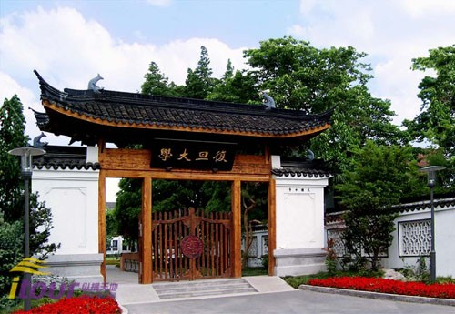

热线电话:
520-521-1314

| 时经80多年后重新启用，1918年老校门的庄严风采被重新复制。不同年代的复旦校友趁着百年校庆，伴着悠扬的钟声，诗情画意般地从老校门步入复旦园。在老校门揭幕仪式上，秦书记和王校长一起揭开了那红绸缎，这个重修的复旦老校门，曾见证了多少复旦的往事。 | ||
|  | ||
.jpg) |
初见它的人，或许会惊讶于它的朴实无华———红瓦白墙，既不雄伟，也不雍容，更有着几分历史的风霜感，似乎与它传扬甚远的美名不相符。然而，每一个复旦学子都会骄傲地说：相辉堂，是我们对复旦过往岁月最真诚的纪念。“相辉”二字取自复旦创始人马相伯、李登辉的名字。在这里，曾上演了多少社团的演出、精彩的讲座，多少次，整个书院同学在这里庆贺。相辉堂沉淀了流逝光阴中的人文情怀，却掩饰不了年岁的痕迹和那一抹飘摇。因为建造年代久远，内部设施陈旧，相辉堂已日渐不能满足学校师生开展活动的要求，其修缮工作正在进行。数年后，一个新的相辉堂又会出现在我们的眼前。 |